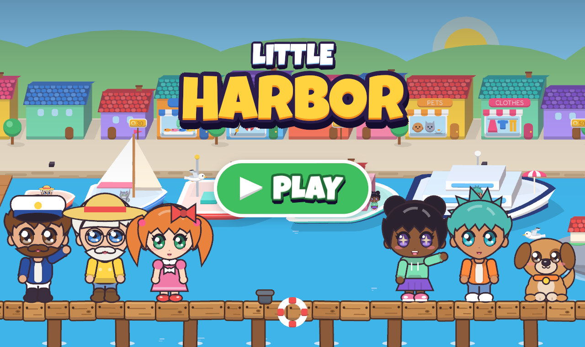
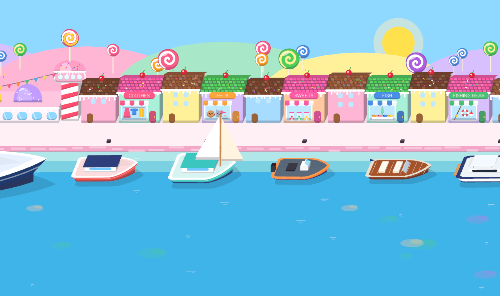
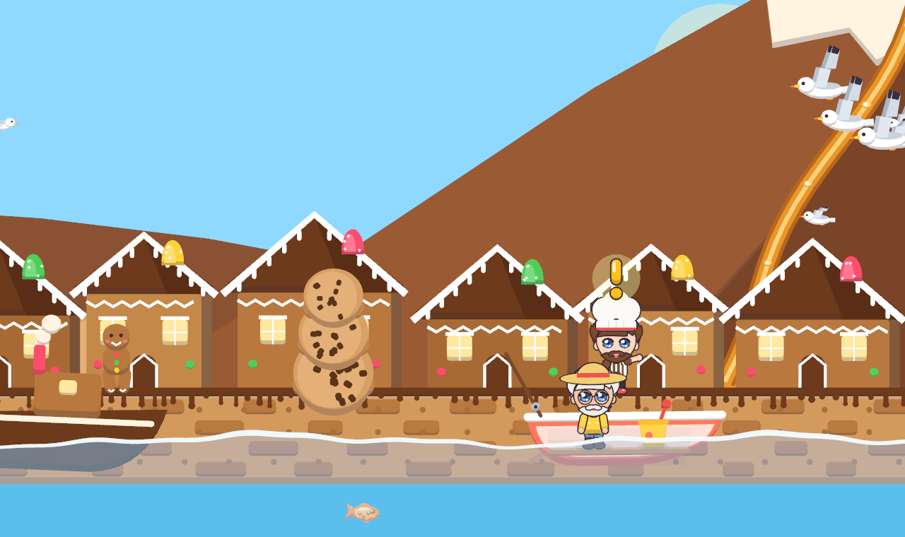
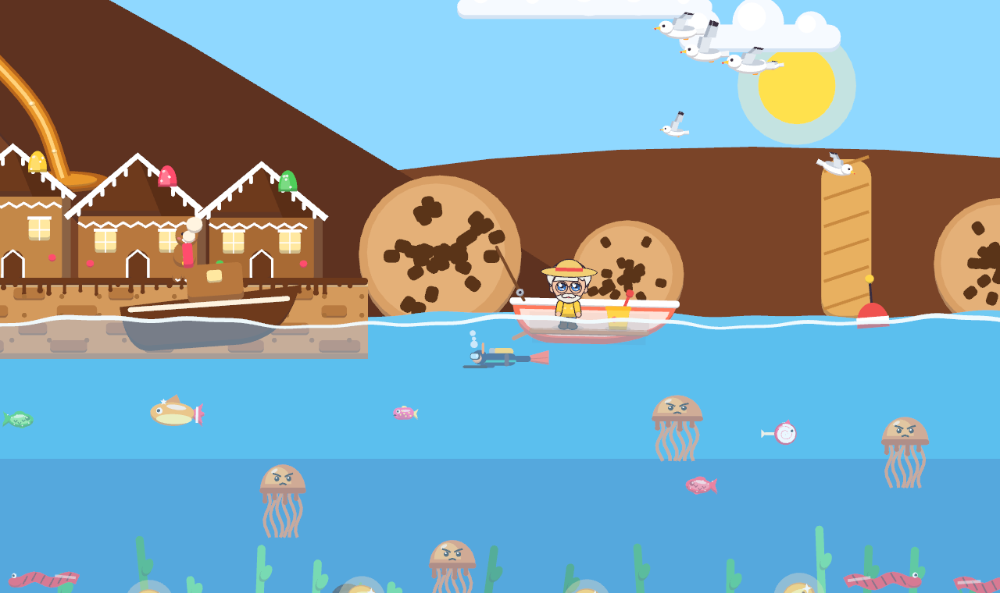

About the game
Little Harbor is a cosy, toy-like harbour game. Decorate houseboats, build your own boats, dress up your crew and adopt cute pets. Sail out to sea to fish, trade your catch in sunny, jungle and snowy ports and buy houses to furnish. Then buy the cruise ship and sail across the ocean to the islands and the Candy Coast, where people have quests for you. There's no score and no rush, just tapping, dragging and playing pretend.


Across the ocean
Cruise over the globe on the Ocean Dream to four islands: Coral Bay with its boats to sail, Ember Isle under a smoking volcano, Bamboo Bay among the cherry blossom, and icy Frostbite Floe. The people there need your help, from landing a giant lava fish to netting a huge sea snake.


The Candy Coast
Save up and the Ocean Dream will take you on to the sweetest place on the globe: Gumdrop Bay with its candy houses, Lollipop Lagoon, Sundae Shores and Cocoa Cove, where the gingerbread houses stand under chocolate mountains. Catch the gummy sharks, land Big Scoop, and dive for the baker's golden cookies among the caramel jellyfish.



What you can do
- Make every boat your own with furniture and decor that react when you tap them.
- Design and launch up to eight boats of your own in the shipyard.
- Dress up your crew in the clothes shop, or make brand-new friends.
- Adopt puppies, kittens, bunnies, hamsters, budgies and turtles.
- Fish with a rod, a net, a trawl or a diver, and sell your catch.
- Visit Sunny Sands, Parrot Cove, Snowpeak Fjord and Big Bay City.
- Buy the cruise ship and cruise across the ocean to the islands and the Candy Coast.
- Help the people with a "!" over their head: catch a giant squid, piranhas, a giant lava fish, a sea snake, gummy sharks and Big Scoop, and dive for golden cookies.
- Buy a house and furnish it like a doll's house.
- Play by day, at sunset or under the stars, with up to four profiles for the whole family.
No ads, no in-app purchases, and no personal data collected. See the privacy policy.